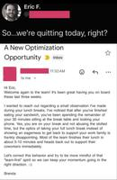

Researchers at Cortical Labs used living human neurons grown on a chip to learn how to play Doom in about a week. "While its performance is not up to par with humans, experts say it brings biological computers a step closer to useful real-world applications, like controlling robot arms," reports New Scientist. From the report: In 2021, the Australian company Cortical Labs used its neuron-powered computer chips to play Pong. The chips consisted of clumps of more than 800,000 living brain cells grown on top of microelectrode arrays that can both send and receive electrical signals. Researchers had to carefully train the chips to control the paddles on either side of the screen. Now, Cortical Labs has developed an interface that makes it easier to program these chips using the popular programming language Python. An independent developer, Sean Cole, then used Python to teach the chips to play Doom, which he did in around a week.
"Unlike the Pong work that we did a few years ago, which represented years of painstaking scientific effort, this demonstration has been done in a matter of days by someone who previously had relatively little expertise working directly with biology," says Brett Kagan of Cortical Labs. "It's this accessibility and this flexibility that makes it truly exciting."
The neuronal computer chip, which used about a quarter as many neurons as the Pong demonstration, played Doom better than a randomly firing player, but far below the performance of the best human players. However, it learnt much faster than traditional, silicon-based machine learning systems and should be able to improve its performance with newer learning algorithms, says Kagan. However, it's not useful to compare the chips with human brains, he says. "Yes, it's alive, and yes, it's biological, but really what it is being used as is a material that can process information in very special ways that we can't recreate in silicon." Cortical Labs posted a YouTube video showing its CL1 biological computer running Doom. There's also source code available on GitHub, with additional details in a README file.
Read more of this story at Slashdot.
Author Dan Simmons, best known for the epic sci-fi novel Hyperion and its sequels, has died at 77 following a stroke. Ars Technica's Eric Berger remembers Simmons, writing: Simmons, who worked in elementary education before becoming an author in the 1980s, produced a broad portfolio of writing that spanned several genres, including horror fiction, historical fiction, and science fiction. Often, his books included elements of all of these. This obituary will focus on what is generally considered his greatest work, and what I believe is possibly the greatest science fiction novel of all time, Hyperion.
Published in 1989, Hyperion is set in a far-flung future in which human settlement spans hundreds of planets. The novel feels both familiar, in that its structure follows Chaucer's Canterbury Tales, and utterly unfamiliar in its strange, far-flung setting. Simmons' Hyperion appeared in an Ask Slashdot story back in 2008, when Slashdot reader willyhill asked for tips on how Slashdotters track down great sci-fi. If you're in the mood for a little nostalgia, or just want to browse the thread for book recommendations, it's well worth revisiting.
Read more of this story at Slashdot.
New submitter DeanonymizedCoward shares a report from TechCrunch: The U.S. Cybersecurity and Infrastructure Security Agency (CISA) is reportedly in crisis following major budget cuts, layoffs, and furloughs under the Trump administration, says TechCrunch. The agency has now replaced its acting director, Madhu Gottumukkala, after a turbulent year marked by controversy and internal turmoil. During his tenure, Gottumukkala allegedly mishandled sensitive information by uploading government documents to ChatGPT, oversaw a one-third reduction in staff, and reportedly failed a counterintelligence polygraph needed for classified access. His leadership also saw the suspension of several senior officials, including CISA's chief security officer. Nextgov also reported that CISA lost another top senior official, Bob Costello, the agency's chief information officer tasked with overseeing the agency's IT systems and data policies. "Last month, CISA's acting director Madhu Gottumukkala reportedly took steps to transfer Costello, but other political appointees blocked it," added Nextgov.
Read more of this story at Slashdot.
joshuark shares a report from Ars Technica: Perplexity has introduced "Computer," a new tool that allows users to assign tasks and see them carried out by a system that coordinates multiple agents running various models. The company claims that Computer, currently available to Perplexity Max subscribers, is "a system that creates and executes entire workflows" and "capable of running for hours or even months."
The idea is that the user describes a specific outcome -- something like "plan and execute a local digital marketing campaign for my restaurant" or "build me an Android app that helps me do a specific kind of research for my job." Computer then ideates subtasks and assigns them to multiple agents as needed, running the models Perplexity deems best for those tasks. The core reasoning engine currently runs Anthropic's Claude Opus 4.6, while Gemini is used for deep research, Nano Banana for image generation, Veo 3.1 for video production, Grok for lightweight tasks where speed is a consideration, and ChatGPT 5.2 for "long-context recall and wide search."
This kind of best-model-for-the-task approach differs from some competing products like Claude Cowork, which only uses Anthropic's models. All this happens in the cloud, with prebuilt integrations. "Every task runs in an isolated compute environment with access to a real filesystem, a real browser, and real tool integrations," Perplexity says. The idea is partly that this workflow was what some power users were already doing, and this aims to make that possible for a wider range of people who don't want to deal with all that setup.
People were already using multiple models and tailoring them to specific tasks based on perceived capabilities, while, for example, using MCP (Model Context Protocol) to give those models access to data and applications on their local machines. Perplexity Computer takes a different approach, but the goal is the same: have AI agents running tailor-picked models to perform tasks involving your own files, services, and applications. Then there is OpenClaw, which you could perceive as the immediate predecessor to this concept.
Read more of this story at Slashdot.
An anonymous reader quotes a report from the Associated Press: The U.S. military used a laser Thursday to shoot down a "seemingly threatening" drone flying near the U.S.-Mexico border. It turned out the drone belonged to Customs and Border Protection, lawmakers said. The case of mistaken identity prompted the Federal Aviation Administration to close additional airspace around Fort Hancock, about 50 miles (80 kilometers) southeast of El Paso. The military is required to formally notify the FAA when it takes any counter-drone action inside U.S. airspace.
It was the second time in two weeks that a laser was fired in the area. The last time it was CBP that used the weapon and nothing was hit. That incident occurred near Fort Bliss and prompted the FAA to shut down air traffic at El Paso airport and the surrounding area. This time, the closure was smaller and commercial flights were not affected. The FAA, CBP and the Pentagon confirmed the incident in a joint statement, saying the military "employed counter-unmanned aircraft system authorities to mitigate a seemingly threatening unmanned aerial system operating within military airspace."
"At President Trump's direction, the Department of War, FAA, and Customs and Border Patrol are working together in an unprecedented fashion to mitigate drone threats by Mexican cartels and foreign terrorist organizations at the U.S.-Mexico Border," the statement said. The report notes that 27,000 drones were detected within 1,600 feet of the southern border in the last six months of 2024.
Illinois Democratic U.S. Sen. Tammy Duckworth, the ranking member on the Senate's Aviation Subcommittee, is calling for an independent investigation to look into the matter. "The Trump administration's incompetence continues to cause chaos in our skies," Duckworth said.
Read more of this story at Slashdot.
An anonymous reader shares a column: I'm going to take the diplomatic hat off here and say with brutal honesty: basically everybody in the music business hates Spotify except for the people who work there. It's a platform that sucks artists for everything they have, it actively prevents community building, and, despite all of that, the platform still struggles to maintain a healthy profit margin.
The streaming business model is fundamentally broken. And eventually, its demise will become more and more obvious to recognize. I'll break down exactly why the DSP era is coming to a grinding halt, why the major labels are quietly terrified, and why the artists who don't pivot now are going to go down with the ship.
[...] Jimmy Iovine put it bluntly: "The streaming services have a bad situation, there's no margins, they're not making any money." This model only works for Apple, Amazon, and Google, because they don't need their music platforms to be wildly profitable. Amazon uses music as a loss-leader to keep you paying for Prime. Apple uses it to sell $1,000 iPhones. As for Spotify, or any standalone music streaming company, they're kind of screwed. And guess what -- when the platform's margins are structurally squeezed, guess who gets squeezed first? The artists.
[...] What if Jimmy is right? If the DSPs are "minutes away from obsolete," what replaces them? Well, I'm not sure the DSPs are going to disappear overnight, but if you're an artist or a manager trying to sustain yourself in this evolving music economy, the answer is direct ownership. The artists who will survive the next five years are the ones who are quietly shifting their focus away from the "ATM Machine."
They are building their own cultural hangars. They are capturing phone numbers on Laylo. They are driving fans to private Discord servers. They are focusing on ARPF (Average Revenue Per Fan) through high-margin merch, vinyl, and hard tickets, rather than begging for fractions of a penny from a playlist placement. We are witnessing the death of the "Mass Audience" and the birth of the "Micro-Community."
Read more of this story at Slashdot.
The $200 billion video game industry is caught between studios eager to cut ballooning development costs through AI and a player base that has grown openly hostile to the technology after a string of visible blunders.
As Bloomberg News reports, Arc Raiders, a surprise hit from Stockholm-based Embark Studios that sold 12 million copies in three months, was briefly vilified online for its robotic-sounding auto-generated voices -- even as CEO Patrick Soderlund insists AI was only used for non-essential elements. EA's Battlefield 6 and Activision's Call of Duty: Black Ops 7 both drew gamer anger this winter over thematically mismatched or poorly generated graphics, and Valve's Steam has added labels to flag games made using AI.
Some 47% of developers polled by research house Omdia said they expect generative AI to reduce game quality, and PC gamers -- now facing inflated hardware prices from AI-driven demand for graphics chips -- have turned reflexively antagonistic.
Read more of this story at Slashdot.
An anonymous reader shares a report: Worldwide smartphone shipments are forecast to decline 12.9% year-on-year (YoY) in 2026 to 1.1 billion units, according to the International Data Corporation (IDC) Worldwide Quarterly Mobile Phone Tracker. This decline will bring the smartphone market to its lowest annual shipment volume in more than a decade. The current forecast represents a sharp decline from our November forecast amid the intensifying memory shortage crisis.
Read more of this story at Slashdot.
Nasa announced on Friday radical changes to its delayed Artemis III mission to land humans back on the moon, as the US space agency grapples with technical glitches and criticism that it is trying to do too much too soon. From a report: The abrupt shift in strategy was laid out by the space agency's recently confirmed administrator, Jared Isaacman. Announcing the changes on Friday, he said that Nasa would introduce at least one new moon flight before attempting to put humans back on the lunar surface for the first time in more than half a century, in 2028.
The new, more incremental approach would give the Nasa team a chance to test flight and refine its technology. As part of the changes, the Artemis II mission to fly humans around the moon this year, without landing, would also be pushed back from its latest scheduled launch on 6 March to 1 April at the earliest.
"Everybody agrees this is the only way forward," Isaacman told reporters at a news conference. "I know this is how Nasa changed the world, and this is how Nasa is going to do it again."
Read more of this story at Slashdot.
A sprawling Chinese influence operation -- accidentally revealed by a Chinese law enforcement official's use of ChatGPT -- focused on intimidating Chinese dissidents abroad, including by impersonating US immigration officials, according to a new report from ChatGPT-maker OpenAI. From a report: The Chinese law enforcement official used ChatGPT like a diary to document the alleged covert campaign of suppression, OpenAI said. In one instance, Chinese operators allegedly disguised themselves as US immigration officials to warn a US-based Chinese dissident that their public statements had supposedly broken the law, according to the ChatGPT user. In another case, they describe an effort to use forged documents from a US county court to try to get a Chinese dissident's social media account taken down.
The report offers one of the most vivid examples yet of how authoritarian regimes can use AI tools to document their censorship efforts. The influence operation appeared to involve hundreds of Chinese operators and thousands of fake online accounts on various social media platforms, according to OpenAI.
Read more of this story at Slashdot.
An anonymous reader shares a report: While some see AI as a tool to be used, its specific use and how it is deployed responsibly is being heavily debated online across a wide range of industries. In terms of journalistic content, and in this particular instance, reviews, review aggregator Metacritic has taken a firm stance on content published and submitted to their platform, that have been generated by artificial intelligence in some way.
In a statement by co-founder Marc Doyle, sent to Gamereactor, he says this: "Metacritic has been a reputable review source for a quarter century and has maintained a rigorous vetting process when adding new publications to our slate of critics. However, in certain instances such as a publication being sold or a writing staff having turned over, problems can arise such as plagiarism, theft, or other forms of fraud including AI-generated reviews. Metacritic's policy is to never include an AI-generated critic review on Metacritic and if we discover that one has been posted, we'll remove it immediately and sever ties with that publication indefinitely pending a thorough investigation."
So, what is this about specifically? Well, it's probably a sound guess, that this pertains to Videogamer's review of Resident Evil 9: Requiem, which was removed from the platform after a barrage of comments accusing the review of being AI-written, and for the author of being made up.
Read more of this story at Slashdot.
An anonymous reader quotes a report from Wired: OpenAI has fired an employee following an investigation into their activity on prediction market platforms including Polymarket, WIRED has learned. OpenAI CEO of Applications, Fidji Simo, disclosed the termination in an internal message to employees earlier this year. The employee, she said, "used confidential OpenAI information in connection with external prediction markets (e.g. Polymarket)." "Our policies prohibit employees from using confidential OpenAI information for personal gain, including in prediction markets," says spokesperson Kayla Wood. OpenAI has not revealed the name of the employee or the specifics of their trades.
Evidence suggests that this was not an isolated event. Polymarket runs on the Polygon blockchain network, so its trading ledger is pseudonymous but traceable. According to an analysis by the financial data platform Unusual Whales, there have been clusters of activities, which the service flagged as suspicious, around OpenAI-themed events since March 2023. Unusual Whales flagged 77 positions in 60 wallet addresses as suspected insider trades, looking at the age of the account, trading history, and significance of investment, among other factors. Suspicious trades hinged on the release dates of products like Sora, GPT-5, and the ChatGPT Browser, as well as CEO Sam Altman's employment status. In November 2023, two days after Altman was dramatically ousted from the company, a new wallet placed a significant bet that he would return, netting over $16,000 in profits. The account never placed another bet.
The behavior fits into patterns typical of insider trades. "The tell is the clustering. In the 40 hours before OpenAI launched its browser, 13 brand-new wallets with zero trading history appeared on the site for the first time to collectively bet $309,486 on the right outcome," says Unusual Whales CEO Matt Saincome. "When you see that many fresh wallets making the same bet at the same time, it raises a real question about whether the secret is getting out." [...] Though this is the first confirmed case of a large technology company firing an employee over trades in prediction markets, it's almost certainly not the last. Opportunities for tech sector employees to make trades on markets abound. "The data tells me this is happening all over the place," Saincome says.
Read more of this story at Slashdot.
President Donald Trump has ordered all U.S. federal agencies to "immediately cease" using Anthropic's AI technology, escalating a standoff after the company sought limits on Pentagon use of its models. CNBC reports: The company, which in July signed a $200 million contract with Pentagon, wants assurances that the Defense Department will not use its AI models will not be used for fully autonomous weapons or mass domestic surveillance of Americans. The Pentagon had set a deadline of 5:01 p.m. ET Friday for Anthropic to agree to its demands to allow the Pentagon to use the technology for all lawful purposes. If Anthropic did not meet that deadline, Pete Hegseth threatened to label the company a "supply chain risk" or force it to comply by invoking the Defense Production Act.
"The Leftwing nut jobs at Anthropic have made a DISASTROUS MISTAKE trying to STRONG-ARM the Department of War, and force them to obey their Terms of Service instead of our Constitution," Trump said in a post on Truth Social. "Their selfishness is putting AMERICAN LIVES at risk, our Troops in danger, and our National Security in JEOPARDY."
"Therefore, I am directing EVERY Federal Agency in the United States Government to IMMEDIATELY CEASE all use of Anthropic's technology," Trump wrote. "We don't need it, we don't want it, and will not do business with them again! There will be a Six Month phase out period for Agencies like the Department of War who are using Anthropic's products, at various levels," Trump said. On Friday, OpenAI said it would also draw the same red lines as Anthropic: no AI for mass surveillance or autonomous lethal weapons.
Read more of this story at Slashdot.
An anonymous reader shares a report: Weeks after the U.S. Congress rejected unprecedented cuts to science budgets that the administration of US President Donald Trump had sought for 2026, funding to several agencies that award research grants is still not freely flowing.
One reason is that the White House Office of Management and Budget (OMB) has been slow to authorize its release. The US National Institutes of Health (NIH) has so far not received approval to spend any of the research funding allocated in a budget bill signed into law on 3 February. The US National Science Foundation (NSF) was authorized to spend its funding just last week. And NASA has had its full funding authorized for release, but with an unusual restriction that limits spending on ten specific programmes -- many of which the Trump team had tried to cancel last year.
Read more of this story at Slashdot.
South Korea has reversed a two-decade policy and approved the export of high-precision map data, paving the way for a fully functional Google Maps in the country. Reuters reports: The approval was made "on the condition that strict security requirements are met," the Ministry of Land, Infrastructure and Transport said in a statement. Those conditions include blurring military and other sensitive security-related facilities, as well as restricting longitude and latitude coordinates for South Korean territory on products such as Google Maps and Google Earth, it said.
The decision is expected to hurt Naver and Kakao -- local internet giants which currently dominate the country's market for digital map services. But it will appease Washington, which has urged Seoul to tackle what it says is discrimination against U.S. tech companies. South Korea, still technically at war with North Korea, had shot down Google's previous bids in 2007 and 2016 to be allowed to export the data, citing the risks that information about sensitive military and security facilities could be exposed. "Google can now come in, slash usage fees, and take the market," said Choi Jin-mu, a geography professor at Kyung Hee University. "If Naver and Kakao are weakened or pushed out and Google later raises prices, that becomes a monopoly. Then, even companies that rely on map services -- logistics firms, for example -- become dependent, and in the long run, even government GIS (geographic information) systems could end up dependent on Google or Apple. That's the biggest concern."
Read more of this story at Slashdot.
Tim Culpan / Culpium : Sources: TSMC urges clients to apply for N2 production allocation as far out as Q2 2027, with large capacity allotments nearly sold out for the next two years — [Exclusive] Clients are being asked to finalize their requirements into mid 2027, with larger customers already booking capacity over the next two to three years.
Wired : Anthropic's dispute with the DOD raises critical questions for US military partners like Nvidia, Google, Amazon, and Palantir, which work closely with Anthropic — Anthropic says it would be “legally unsound” for the Pentagon to blacklist its technology after talks over military use of its artificial intelligence models broke down.
Reuters : Coupang reports Q4 revenue up 11% YoY to $8.8B, below $8.9B est., and a net loss of $26M, versus $131M net profit in Q4 2024, hurt by fallout from a data breach — E-commerce giant Coupang (CPNG.N) swung to a fourth-quarter loss on Thursday and reported revenue below analysts' estimates …
Jagmeet Singh / TechCrunch : Source: India issued a blocking order on February 24 to restrict access to developer database service Supabase; the government did not publicly cite a reason — Supabase, a popular developer database platform, is facing disruptions in India — one of its key markets — has been blocked in India, TechCrunch has learned.
Wall Street Journal : Sources: Nvidia plans to unveil a new AI inference chip at its GTC conference in March; the system will have a Groq-designed chip and OpenAI is a customer — Under pressure from rivals, the chip giant is set to offer a new product focused on rapid processing of AI queries for ‘inference’ demand
Sam Altman / @sama : Sam Altman says OpenAI reached an agreement with the DOD to deploy its models in DOD's classified network and asks DOD to extend those terms to all AI companies — Tonight, we reached an agreement with the Department of War to deploy our models in their classified network. In all of our interactions, the DoW displayed a deep respect for safety and a desire to partner to achieve the best possible outcome. AI safety and wide distribution of
Fast Company : A look at a local group's lawsuit against Micron over its $100B New York manufacturing complex, alleging a rushed permitting process and environmental review — Lawsuit over Micron's massive Syracuse project raises concerns about toxic risks and alleges a rushed environmental review.
Financial Times : Sources: DeepSeek plans to release its multimodal model V4 next week and worked with Huawei and Chinese AI chipmaker Cambricon to optimize V4 for their products — Chinese AI group has worked with Huawei to cut reliance on Nvidia chips — Eleanor Olcott in Istanbul and Zijing Wu in Sapporo
Anthropic : Anthropic says it'll challenge “any supply chain risk designation in court” and that the designation would only affect contractors' use of Claude on DOD work — Earlier today, Secretary of War Pete Hegseth shared on X that he is directing the Department of War to designate Anthropic a supply chain risk.
Sharon Goldman / Fortune : Source: Sam Altman told employees the DOD is willing to let OpenAI build its own “safety stack” and won't force OpenAI to comply if its model refuses a task — Sam Altman told OpenAI employees at an all-hands meeting on Friday afternoon that a potential agreement is emerging …
Maria Curi / Axios : Source: the DOD appears to have accepted OpenAI's safety red lines, which were similar to Anthropic's, to deploy OpenAI's tech in classified settings — - Now, the department, which did not immediately respond to a request for comment, appears to have accepted OpenAI's similar conditions.
Yuliya Chernova / Wall Street Journal : Sources: crypto investment firm Paradigm is looking to raise up to $1.5B for a new fund to expand into AI, robotics, and other forms of frontier tech — The venture firm is looking to raise as much as $1.5 billion for a broader, frontier-tech fund — Paradigm, one of the largest venture …
Jonathan Stempel / Reuters : A federal judge issues a preliminary injunction blocking Virginia from enforcing a new law restricting children's social media use, on First Amendment grounds — A federal judge on Friday blocked Virginia from enforcing a new law that aimed to protect children from being addicted to social media …
Dina Bass / Bloomberg : Dell stock closes up 22%, its biggest single-day gain since March 1, 2024, after the company gave an outlook for sales of its AI servers that exceeded estimates — Dell Technologies Inc. shares jumped the most in two years after the company gave an outlook for sales of its artificial intelligence servers …
@secwar : Defense Secretary Pete Hegseth directs the DOD to designate Anthropic as a supply chain risk, barring military contractors from doing business with the company — This week, Anthropic delivered a master class in arrogance and betrayal as well as a textbook case of how not to do business with the United States Government or the Pentagon. Our position has never wavered and will never waver: the Department of War must have full, unrestricted